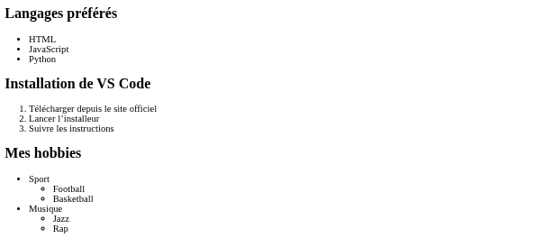

Premier Article
Selecteurs Simples
Nous avons vu les sélecteurs de type, de classe et d'ID. Le sélecteur de type s'applique à tous les éléments d'un même type, comme tous les <p> ou tous les <h1>. Le sélecteur de classe cible des éléments spécifiques ayant une même classe, tandis que le sélecteur d'ID est unique à un seul élément.
 Lire la suite
Lire la suite
Article Vedette
Selecteurs d'Attributs
Les sélecteurs d'attributs permettent de cibler des éléments en fonction de la présence ou de la valeur d'un attribut spécifique. Par exemple, on peut sélectionner tous les liens qui ouvrent dans un nouvel onglet avec a[target="_blank"].
Les sélecteurs d'attributs sont très utiles pour styliser des éléments en fonction de leurs attributs, comme les liens, les boutons, ou même les formulaires.

Lire la suite
Dernier Article
Selecteurs de Pseudo-Classes
Les pseudo-classes permettent de cibler des éléments en fonction de leur état. Par exemple, a:hover s'applique aux liens lorsque l'utilisateur passe la souris dessus.
 Lire la suite
Lire la suite
Article
Selecteurs de Pseudo-Elements
Les pseudo-éléments permettent de cibler des parties spécifiques d'un élément. Par exemple, p::first-letter s'applique à la première lettre d'un paragraphe.
Article
Selecteurs Combinés
Les sélecteurs combinés permettent de cibler des éléments en fonction de leur relation avec d'autres éléments. Par exemple, div > p cible tous les paragraphes qui sont des enfants directs d'un div.
Article
Selecteurs Multiples
Les sélecteurs multiples permettent de cibler plusieurs éléments en une seule déclaration. Par exemple, h1, h2, h3 cible tous les titres de niveau 1, 2 et 3.